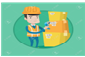
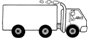
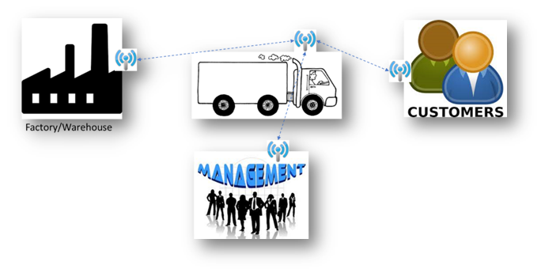

Customers do not care what it takes for get their product on time and some retailers also apply penalties for late delivery. With Rapid Outbound, one can ensure that on time delivery to customers and retailers thus delighting them. Also it helps to enhance the sales and brand value in the market for one’s products.
Rapid outbound will enable your warehouse manager to quickly and easily sort and select order groups for picking and then release the orders for picking.This will be done by using digital tools such as bar code or QR code or RFID which will be integrated with the SAP platform.Thus by digitalizing the picking and packing process, it will improve the efficiency of the dispatch process.Ensuring your Finished goods stock is correctly labeled is critical to your business and goes a long way in providing accuracy and reducing time taken to pick, pack, load goods and generate invoices.
Picking,Packing,Goods,Issue

Bar code on FG stock will be scanned using a bar code scanner a the time of picking and goods issue.
Scanning will trigger automatic picking, packing and goods issue SAP and will print a Packing slip.
Invoice Generation
For Generating Invoice, the packing slip will be scanned and Invoice will be printed with a Bar code.
Gate Exit
For Gate exit , the bar code on the Invoice will be scanned and an Exit pass will be printed and pasted on the invoice.

Tracking of Goods
Rapid outbound will enable live tracking of Goods by using location sensors on vehicles and intimating your business and to the customer regarding the Estimated time for arrival of the goods. This will enhance the quality of service for your Customers and assure them of delivery lead time.

The above image is a representative example – the vehicle of the transporter is fitted with a sensor which sends out signals of its location. This can be connected with the dispatch location or warehouse, with the Customers and also with the management. This will enable each of the parties to track the goods after it has been dispatched from the factory.
Benefits to Business
Cost reduction
Accurate tracking of goods
Customer satisfaction
Security
Reduction in lead times
Reduced inventory needs
Industry Coverage
Different industries have different processes for their outbound logistics and therefore will have different needs. DigiZura will offer services for Rapid Outbound across various industries, few of which are mentioned below.